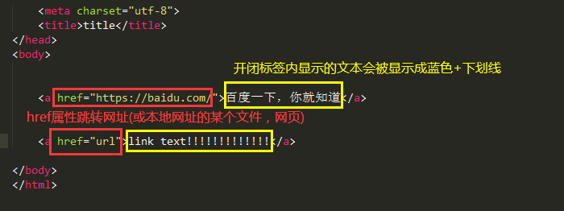

其实这个文段标签没什么好说的，但是总得复习下，对吧;)
标题（Heading）是通过 <h1> - <h6> 等标签进行定义的。
<h1> 定义最大的标题。<h6> 定义最小的标题。
实例:
<h1>标题1</h1>
<h2>标题2</h2>
<h3>标题3</h3>
点击此处查看效果！
请确保将 HTML heading 标签只用于标题。不要仅仅是为了产生粗体或大号的文本而使用标题。
搜索引擎使用标题为您的网页的结构和内容编制索引。
因为用户可以通过标题来快速浏览您的网页，所以用标题来呈现文档结构是很重要的。
应该将 h1 用作主标题（最重要的），其后是 h2（次重要的），再其次是 h3，以此类推。
水平线是通过<hr />标签来进行定义的
效果就像你刚刚看这节的标题前[doge]
实例：
<h1>大标题</h1>
<hr />
<p>文段</p>
点击此处查看效果！ 使用注释会提高代码的可读性，就像你看个很难懂的理论会在文章旁边用注释说明怎么去理解这个之类的。。。
总之，注释你看得懂就行[doge]
实例：
<!--你是一个一个注释啊啊啊啊啊啊啊啊啊-->
注意这个注释的书写格式： <!---->
引用是什么不多讲，这里具体讲标签的使用
<p>鲁迅曾说过:<q>时间就像海绵里的水，只要愿挤，总还是有的。</q></p>
点击此处查看效果！
使用<blockquote>定义长的引用，被<blockquote>标签包围住的元素会进行缩进处理
实例：
<p>万维网的概念：</p>
<blockquote cite="https://baike.baidu.com/item/www/109924">
WWW (World Wide Web，万维网)是存储在Internet计算机中、数量巨大的文档的集合。
这些文档称为页面，它是一种超文本(Hypertext)信息，可以用于描述超媒体。
文本、图形、视频、音频等多媒体，称为超媒体(Hypermedia)。
Web上的信息是由彼此关联的文档组成的，而使其连接在一起的是超链接(Hyperlink)。
</blockquote>
点击此处查看效果！
如果说的没错的话，缩进就像你每一行加了Tab键一样（Tab键默认空出4个空格）
使用<abbr>标签定义一个词的缩写或首字母省略语
对缩写进行标记能够为浏览器、翻译系统以及搜索引擎提供有用的信息。
用法： <abbr title= "全称">缩写</abbr> (简单讲就是使用title属性把全程写出来)
实例：
<blockquote>
<abbr title= "Adobe Photoshop">PS</abbr>是由Adobe Systems开发和发行的图像处理软件。
Photoshop主要处理以像素所构成的数字图像。
使用其众多的编修与绘图工具，可以有效地进行图片编辑和创造工作。
PS 有很多功能，在图像、图形、文字、视频、出版等各方面都有涉及。
</blockquote>
点击此处查看效果! (鼠标悬停在有下划线的词的时候显示全称)
HTML <cite> 元素定义著作的标题。
浏览器通常会以斜体显示 <cite> 元素。
实例：
<p>《汤姆·索亚历险记》（<cite>The Adventures of Tom Sawyer</cite>）
是美国小说家马克·吐温1876年发表的长篇小说。</p>
显示的效果：
《汤姆·索亚历险记》（The Adventures of Tom Sawyer） 是美国小说家马克·吐温1876年发表的长篇小说。
还有<address>和<dfn>标签因为该节篇幅过长，不多描述，有兴趣可以查看 此处（虽然这两个标签显示的都是斜体）
超链接可以是一个字，一个词，一张图，可以通过点击它来跳转到新的网页或网页的某个地方。
当您把鼠标指针移动到网页中的某个链接上时，箭头会变为一只小手。
怎么创建链接？使用 <a> 标签！
简单的食用方法：

实例：
<a href= "https://www.bilibili.com/">哔哩哔哩 (゜-゜)つロ 干杯~-bilibili</a>
你要问效果怎样？那就点这里啊！(doge)
使用target属性可以改变它跳转的方式
属性值只讲两个：新建空白页和在此页面跳转
新建空白页是"_blank"，在此页面跳转是"_self" 。分别对应“空白”与“自身”（确信）
使用：
<a target="_blank" href= "http://bbs.1212321.com/">Bvn游戏论坛</a> <--新建空白页-->
<a target="_self" href= "http://bbs.1212321.com/">Bvn游戏论坛</a> <--当前页面跳转-->
第一种 name属性规定这个“锚”的名称。
没错，这个a标签的正规叫法叫做“锚”，因为它不仅仅是跳转链接，它也可以给它一个名字（或者叫ID，就像学校给予我们的学号一样），来实现这个网页位置的跳转(类似书签的功能？)
具体是怎样的？且听我娓娓道来：
食用方法：
<a name="value">首页...什么的</a>
现在我们给这段文本赋予了一个名字（其实名字自己随便取），如果我们把这段文本放在网页顶部，看得很下时我们想“返回顶部”，那么我们可以这样：
<a href="#value">返回顶部</a>
这样，我们点击”返回顶部“就可以回到顶部啦